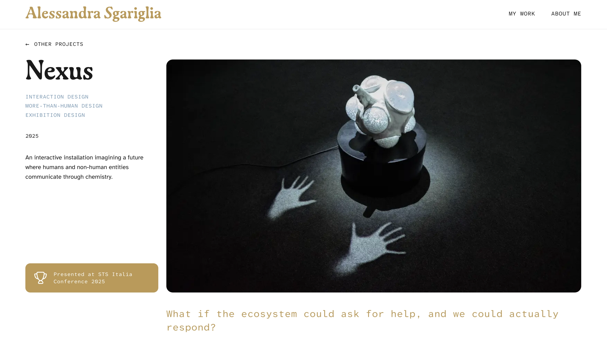
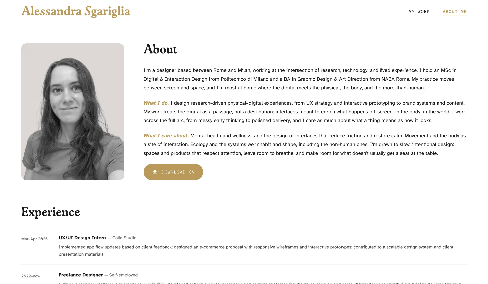

The problem
We live in a time where everyone is talking at the same time. Information arrives in a constant flood, and most of it slides past us — not because it's bad, but because we have no frame for absorbing it. Identity, in that context, isn't vanity. It's a filter — a way of telling other people: this is where I'm coming from, this is the lens I see through, this is what to expect from me.
I noticed I cared deeply about a lot of things — interaction design, wellness, ecology, movement, mental health, the way systems quietly affect each other — and that without a clear way to present them, those interests just looked scattered. The work of personal-brand design, for me, started as a real question: how do I make my thinking digestible to someone who isn't already in my head?
The idea
Most designers treat their portfolio website and their social presence as two separate projects. A polished site over here. A scattered Instagram over there. Maybe a newsletter floating in a third direction. I decided to treat all three as one project, three touchpoints.
The website
The deep layer. Project work, thinking, the about page — designed to be read slowly.
The scroll layer. Posts shaped like website cards — quick to scan, designed to invite a click into the deeper work.
Substack
The reflection layer. Longer writing on design, ecology, movement, and the patterns that connect them.
The unifying design idea is the card. On the website, projects ARE cards you click into. On Instagram, posts look like cards from the website — same shape, same typographic logic, same colour. Someone scrolling my feed sees previews of work in the same format they'd see on the site itself. The leap between platforms stays gentle.
The system
Three typefaces, each doing different work, and a small palette that does the rest.
Display
Cactus Jack
Cactus Jack Alternate — for the hero on the homepage, the one moment where the brand sings.
Headings
Gaya
For section titles, project names, and the everyday voice of the brand — warm, considered, a little quiet.
Body
Atkinson
Atkinson Hyperlegible — chosen on purpose. A typeface designed for readability, including for people with low vision. The brand cares.
The palette is small on purpose: a warm cream as the base, a single gold as the brand accent, an Aegean blue for labels and metadata, and a deep near-black for body text. Restraint is the whole point. Anything more and the work itself can't breathe.
The verbal voice follows the same rule: warm, direct, no jargon. Written the way I'd actually talk about the work to someone I respected. No em-dash flourishes (a small personal allergy). No designer-speak when a plain word will do.
The touchpoints
The website
You're on it. The homepage is structured around cards as the primary interaction — projects, experiments, thinking pieces, the contact card, the "Let's work together" card. Each one a small invitation. The grid breathes; nothing competes for attention with itself.
Project pages follow a consistent rhythm: a short hero with a single question, a body broken into five or so honest sections, a credits block at the end. The format is doing real work — it forces me to make every project legible, to lead with the question instead of the deliverable, and to close with reflection rather than just outcomes.


Three deliberate decisions shape the feed.
Posts as website cards. Project announcements are carousels that walk through the main steps of the work — same typography, same cream + gold, same shape. If you've seen the site, the feed feels like home. If you've only seen the feed, the site feels like the inside of it.
A monogram sticker. A graffiti-style sketch of my initials I drew by hand, then digitised and turned into actual stickers. A small, tactile object that exists outside the screen — a quiet reminder that the brand lives in the physical world too.
Visual resting stations. A blank white square. No text, no image, no information. A pause in the feed — somewhere the eye can rest for as long as it wants, without rushing on. Instagram is built to keep you moving; the resting stations refuse that, on purpose. They're the most direct expression of the problem this case study opens with: in a world drowning in information, sometimes the most useful thing you can do is offer a break.
Substack
The slowest layer. What is design? is the first piece — a reflection on how design is much more than what designers usually mean by it, and how the patterns of design show up everywhere once you start looking. Visually, the Substack posts use the same typographic system: Gaya headings, Atkinson body, gold accent.
It also already lives on the homepage, in the Thinking section — the same card pattern, again, doing the work of saying here is something I've made; here is what I'm thinking about.
What's next
The system is built. What it now exists to carry is a longer-form series of reflections on the things I keep coming back to: how systems quietly shape each other, why information overload makes identity matter more not less, the connections between movement and design and ecology and wellness, and the everyday observations that sit underneath all of that.
Format undecided — possibly written essays continuing the Substack, possibly short video reflections, probably both. The brand is built to hold whatever form the thinking takes. That was the whole point.